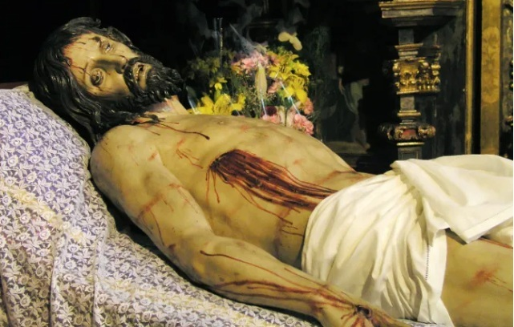
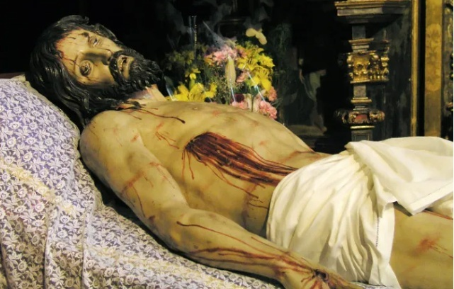

Rutas monacales
Línea cultural de DULCESOR dedicada a la difusión del patrimonio monástico y la tradición artesana, con enlaces institucionales y recursos culturales.
Enfoque cultural
Este espacio se concibe como una línea de difusión cultural y patrimonial. No es una web turística genérica: se prioriza un tono institucional, sobrio y respetuoso, promoviendo el conocimiento y la puesta en valor del patrimonio monástico y la repostería artesanal.
La información y los listados se ampliarán progresivamente conforme avance la actividad de la asociación.
Nota
DULCESOR enlaza a recursos institucionales u oficiales cuando están disponibles. Esta web no comercializa productos: si una comunidad dispone de venta propia, se enlazará a su canal oficial.
Museos conventuales
DULCESOR apoya la conservación y difusión del patrimonio cultural vinculado a la vida conventual, promoviendo los museos conventuales como espacios vivos de memoria, arte y tradición.
Museo del Real Monasterio de San Joaquín y Santa Ana (Valladolid)
Museo de arte sacro barroco en el monasterio cisterciense, con un conjunto patrimonial de gran relevancia. Espacio vinculado a la identidad cultural de DULCESOR.
 

Se está desarrollando una experiencia virtual (RV) vinculada a piezas del museo, que se presentará próximamente.
Las Úrsulas y Las Claras (Salamanca)
Los Museos Las Úrsulas y Las Claras de Salamanca son el testimonio, a través del arte, de la presencia de la Comunidad de Santa Clara en la provincia.
El Monasterio de la Anunciación, conocido popularmente como “las Úrsulas”, es uno de los conjuntos religiosos más interesantes de la ciudad de Salamanca, y desde el año 1931 Monumento Histórico Nacional.
El Museo de Pintura Medieval de Santa Clara pone en relieve la importancia artística de este espacio, de sus murales, su artesonado y su musealización.
Otros museos (en preparación)
Monasterio de Santa Clara (Tordesillas) · Conjunto monumental
Espacio monástico con valor histórico y patrimonial destacado. Este bloque está preparado para completarse con información institucional y enlace oficial.
Convento de San Francisco (Medina de Rioseco) · Patrimonio sacro
Espacio vinculado al patrimonio conventual de la provincia. Este bloque está preparado para completarse con información institucional y enlace oficial.
Este apartado crecerá incorporando otros museos conventuales que compartan los valores culturales y patrimoniales de DULCESOR.
Rutas de una mañana
Prepararemos pequeñas rutas culturales (mañana o media jornada) para visitar tres o cuatro monasterios, museos o espacios patrimoniales, con posibilidad de enlazar a la compra de productos si la comunidad dispone de canales oficiales.
Estas rutas se publicarán cuando estén contrastadas y presenten un enfoque cultural y respetuoso con las comunidades.
Conventos y monasterios
Enlaces directos a webs oficiales o canales institucionales de conventos y monasterios. Cuando existan tiendas online o sistemas de venta propios, se enlazarán para facilitar el acceso a sus productos.
DULCESOR no comercializa productos en esta web. Los enlaces dirigen a plataformas externas gestionadas por cada comunidad o entidad.
Convento / Monasterio (Ejemplo 1)
Bloque preparado para incorporar nombre, localidad, breve descripción institucional y enlace oficial.
Convento / Monasterio (Ejemplo 2)
Bloque preparado para incorporar nombre, localidad, breve descripción institucional y enlace oficial.
Para añadir un nuevo convento/monasterio, duplica uno de los bloques “Ejemplo” y cambia título, texto y enlaces.